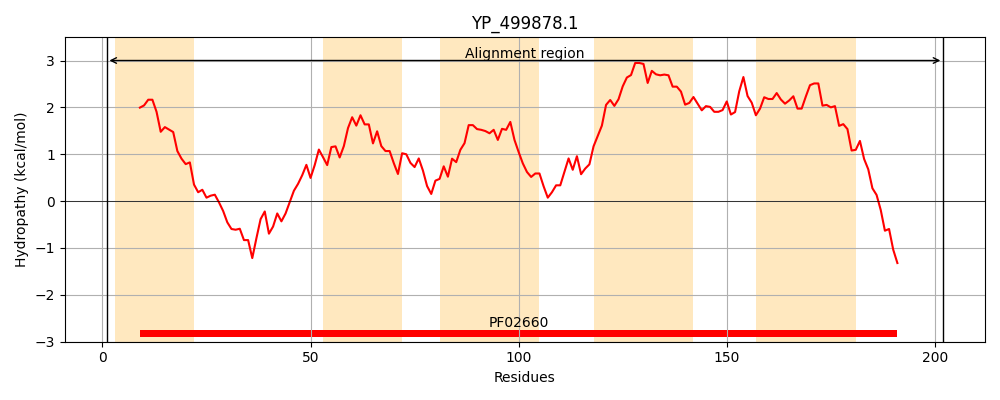
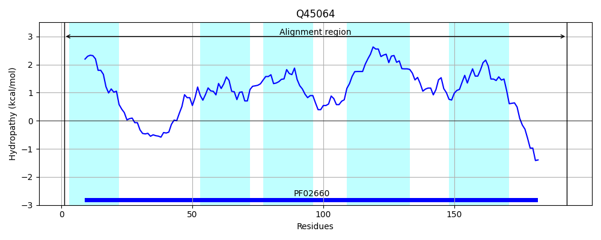
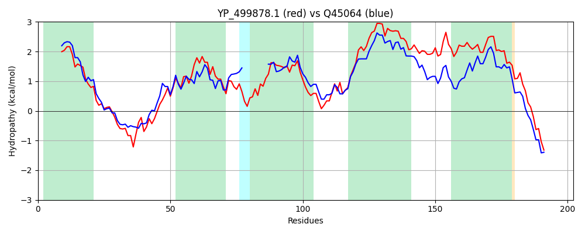

Hit Accession: Q45064
Hit TCID: 9.B.31.1.2
Hit Description: gnl|BL_ORD_ID|13615 gnl|TC-DB|Q45064|9.B.31.1.2 Glycerol-3-phosphate acyltransferase OS=Bacillus subtilis (strain 168) GN=plsY PE=1 SV=1
Mach Len: 202
e:0.000000
Query TMS Count : 5
Hit TMS Count: 5
TMS-Overlap Score: 4.350000
Predicted Substrates:None
BLAST Alignment:
Score: 458 , Bit scores: 181 bits, E-value: 3.9e-58, Alignment length: 202, Percentage identity: 46
Query: 1 MMIIVMLLLSYLIGAFPSGFVIGKLFFKKDIRQFGSGNTGATNSFRVLGRPAGFLVTFLDIFKGFITVFFPLWLQVHADGPISTFFTNGLIVGLFAILGHVYPVYLKFQGGKAVATSAGVVLGVNPILLLILAIIFFIVLKIFKYVSLASIVAAICCVIGSLIIQDYILLVVSFLVSIILIIRHRSNIARIFRGEEPKIKWM 202
M+I ++++L+YLIG+ PSG ++GKL DIR+ GSGN GATN+FR LG AG +V DI KG + P + V + L+ G+FA+LGHV+P++ KF+GGKAVATS GV+L P+L + + +FFI L + K+VSL+S++ I VI S + D LL+V L++I +I RHR+NI RI EPK+KW+
Sbjct: 1 MLIALLIILAYLIGSIPSGLIVGKLAKGIDIREHGSGNLGATNAFRTLGVKAGSVVIAGDILKGTLATALPFLMHVDI---------HPLLAGVFAVLGHVFPIFAKFKGGKAVATSGGVLLFYAPLLFITMVAVFFIFLYLTKFVSLSSMLTGIYTVIYSFFVHDTYLLIVVTLLTIFVIYRHRANIKRIINKTEPKVKWL 193 | Protein Hydropathy Plots: |
|---|
|  |  |
Pairwise Alignment-Hydropathy Plot:
|
|---|
|  |